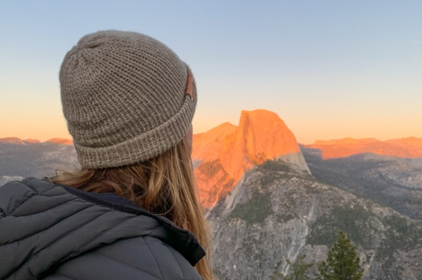
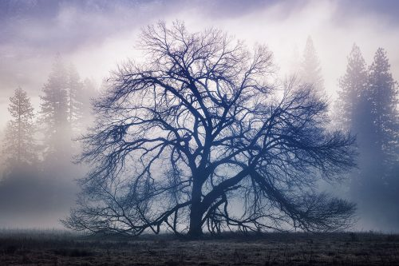

STORIES
EXPERIENCES FROM TRAVELLERS




Not just a great valley, but a shrine to human foresight, the strength
of granite, the power of glaciers, the presistence of life, and the
tranquility of the High Sierra. First protected in 1864, Yosemite
NAtional Park is best known for its waterfalls, but within its nearly
1,200 square miles, you can find deep valleys, grand meadows,
acient giant sequoias, a vast wilderness area, and more.
Million of visitors come to California's Yosemite National Park
each year to see, and even climb, the Yosemite Valley's awe
inspiring rock formation. Towering sheer cliffs striped with ribbons
of flowing waterfalls rise from the valley's floor, creating dazzling
photo opportunities and thrilling nature lovers. in the summer
months visitors can view it all from Glacier Point.
The Giant Sequoias, A true testament to the beauty that
comes from responsible stewardship of nature
Yosemite National Park is home to thousands of waterfalls, from
towering spectacles with a half-mile os cascading water, to tiny
streams of white that drop only a few feet. Springs is the best time
to experience Yosemite's waterfalls, when the winter's massive
snowfall melts away and heads toward the Pacific Ocean.
YOSEMITE NATIONAL PARK
Nunc nec nisl mattis, aliquam erat et, porta ligula.
Etiam facilisis faucibus mollis. Maecenas convallis
quam feugiat, ullamcorper mi at, tempor justo.
Nunc nec nisl mattis, aliquam erat et, porta ligula.
Etiam facilisis faucibus mollis. Maecenas convallis
quam feugiat, ullamcorper mi at, tempor justo.
Nunc nec nisl mattis, aliquam erat et, porta ligula.
Etiam facilisis faucibus mollis. Maecenas convallis
quam feugiat, ullamcorper mi at, tempor justo.

the expansive forests and a varity of rich habitats within Yosemite
National Park hold over 400 animal species. Black bear, mule deer,
foxes, and other mammals can be found throughout the Yosemite
Valley. At higher elevations, the endangered Sierra Nevada big horn
sheet can occasionally be spotted in the northeastern part.
With a bit of planning and some helpful tips, your experience
at Yosemite National Park will be easier, safer, and more fun.
We recommend looking through all of the tips as you plan your
trip. Also familiarize yourself with Yosemite's seasons, which can
be quite different than what you experience at home. With a great
plan and a smart way to get from place to place, you'll be ready to
start exploring the moment you arrive
This map includes High Sierra Camps, Tuolumne Meadows Lodge,
and white wolf Lodge spots.